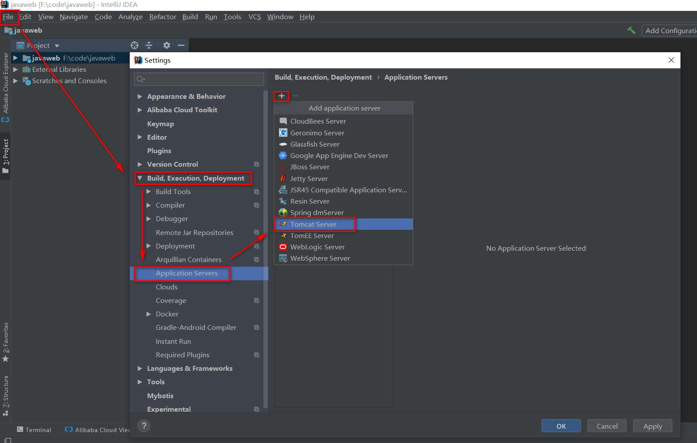
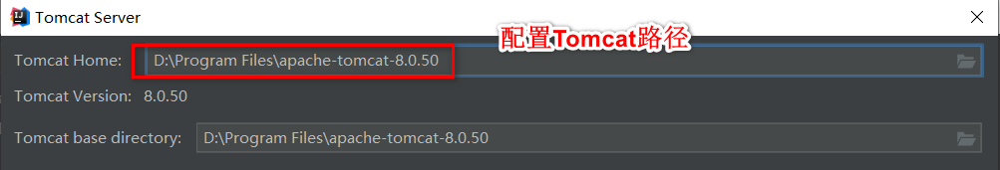
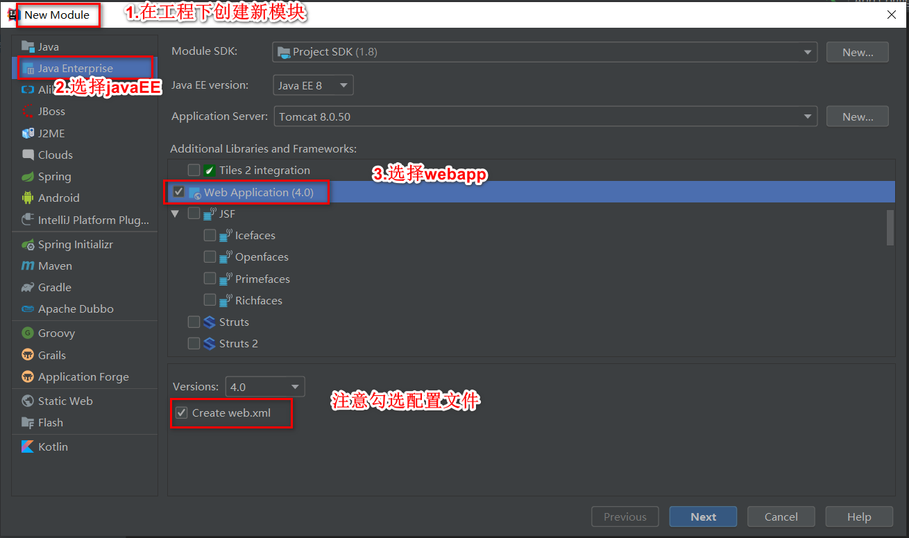
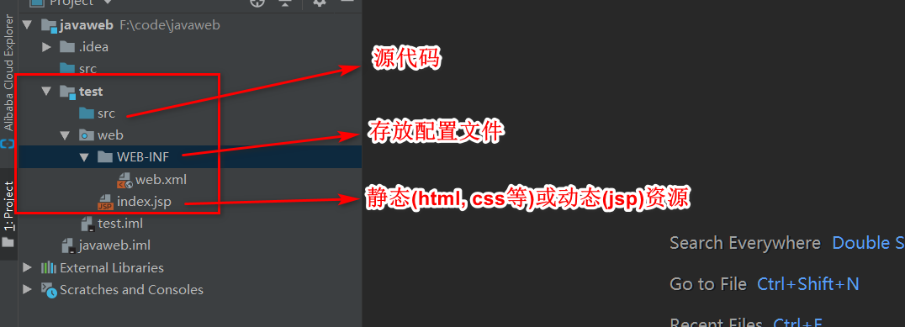
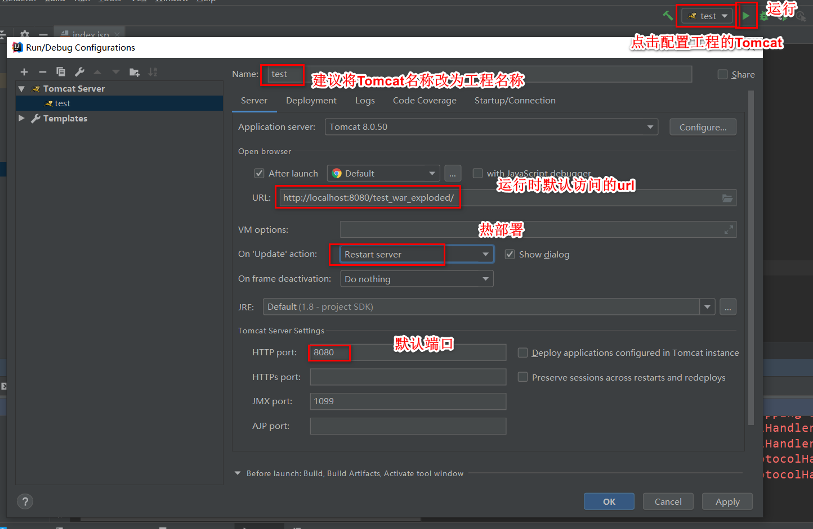

Tomcat
Tomcat：由 Apache 组织提供的一种 Web 服务器，提供对 jsp 和 Servlet 的支持。
安装
解压即可
| 目录 | 说明 |
|---|---|
| bin | 服务器的可执行程序. 比如启动程序startup.bat,和终止程序shutdown.bat |
| conf | 服务器的配置文件. 比如配置端口号 |
| lib | 服务器自己的jar包 |
| logs | 服务器运行时输出的日记信息 |
| temp | 服务器运行运行时产生的临时数据 |
| webapps | 存放部署的 Web 工程。 |
| work | 运行时jsp翻译为Servlet的源码，和Session钝化的目录。 |
启动和终止
bin目录下的startup.bat双击即可启动, 可访问localhost:8080, 默认访问的的是\apache-tomcat-8.0.50\webapps\ROOT
部署工程
把web工程的目录拷贝到Tomcat的webapps目录下, 访问路径是http://ip:port/web工程/资源名
配置文件
-
工程目录配置
Tomcat的\conf\Catalina\localhost目录, 创建一个xml文件, 写入<Context path="/abc" docBase="E:\book" />.- path 表示工程的访问路径:/abc
- docBase 表示你的工程目录在哪里
-
端口号配置
Tomcat的\conf\的server.xml文件, 修改<Connector port="8080" protocol="HTTP/1.1" connectionTimeout="20000" redirectPort="8443" />
整合idea
- 添加Tomcat容器


- 新建工程


